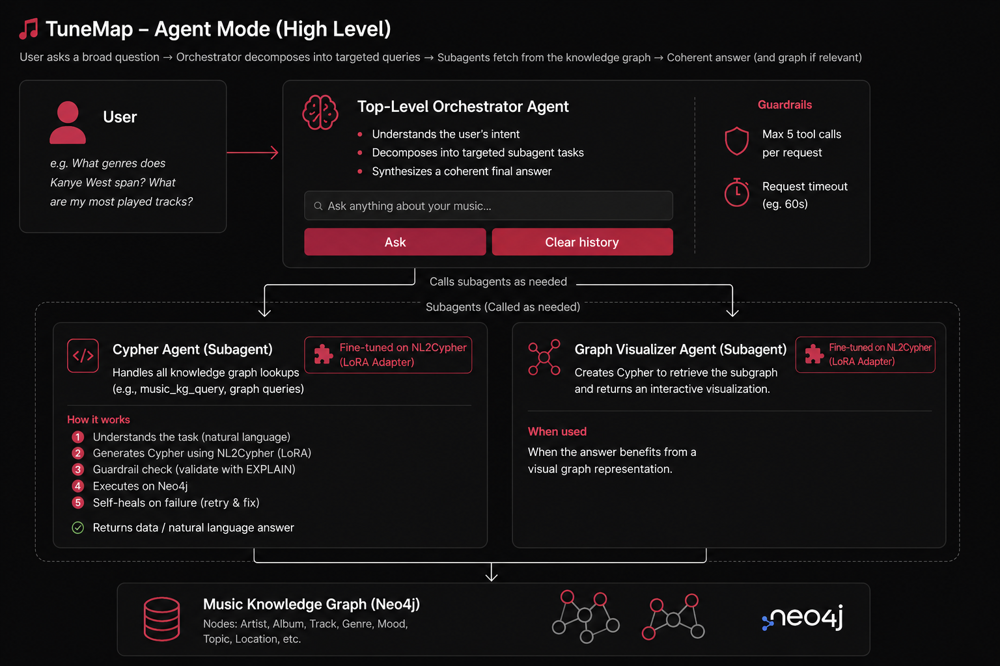
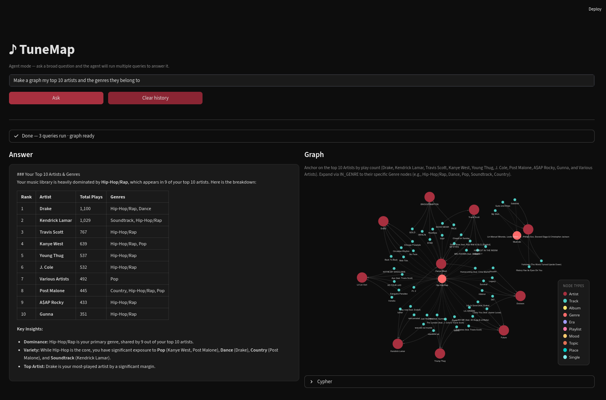

TuneMap
# fine-tuning + adapter serving

TuneMap turns my Apple Music library into a queryable knowledge graph: ask a question in plain English and get a natural-language answer plus an interactive visualisation of the exact subgraph behind it. It started as a way to explore my own music taste, and became a deep-dive into fine-tuning and serving a task-specific model.
The core is a LoRA adapter I fine-tuned for natural-language-to-Cypher translation, hot-swapped per-request in vLLM so the specialist only loads when a query actually needs it. To know whether the fine-tune actually worked, I generated an evaluation dataset for the text-to-Cypher task and benchmarked the model's performance on it.
The adapter is deployed as a specialist subagent, called on demand by a main conversational agent that handles the dialogue.

// what I learned
- Agents can lean on knowledge graphs: translate natural language to Cypher with a specialist model instead of forcing one model to do everything.
- The way vLLM plugs in adapters per-request means you can design genuinely complex systems mixing specialist and generalist models, all at low latency.
- I fine-tuned the model on vast.ai (my own compute was busy): cheap, but a hassle to set everything up on a fresh disk.